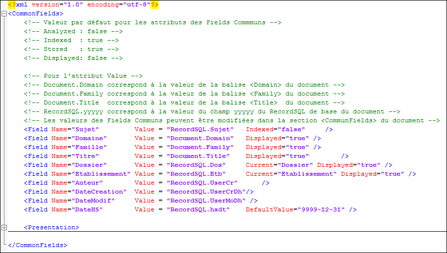

Dans l'ERP Divalto, il existe des champs communs à l'ensemble des tables, comme le dossier, l'établissement, la date de création, etc.
Ces données sont particulièrement intéressantes dans le cadre d'un moteur de recherche pour effectuer des filtrages. Par exemple, dans le cadre d'une recherche ne s'intéresser qu'aux documents d'un dossier ou d'un établissement particulier, qu'aux documents récents.
Dans la base Search, ces champs deviendront des Fields identifiés par un nom (Attribut Name). Nous les appelons dorénavant les Fields Communs
Les fields communs à tous les documents sont décrits dans le fichier Search_commonFields.xml.
Les attributs d'un field commun peuvent être redéfinis pour chaque document dans la section <CommonFields> du document.
Un field est décrit dans une balise <field>. Les attributs de la balise permettent de préciser les propriétés du field.
Les valeurs des fields communs ont deux origines :
La description des documents (le domaine, la famille, le titre)
La base de données ERP (le sujet, l'auteur, la date de création, etc.)
Afin d’alléger la description des fields des attributs facultatifs prennent des valeurs par défaut. (ce ne sont pas les mêmes pour les fields communs que pour les fields des documents).
Search_commonFields.xml
l
